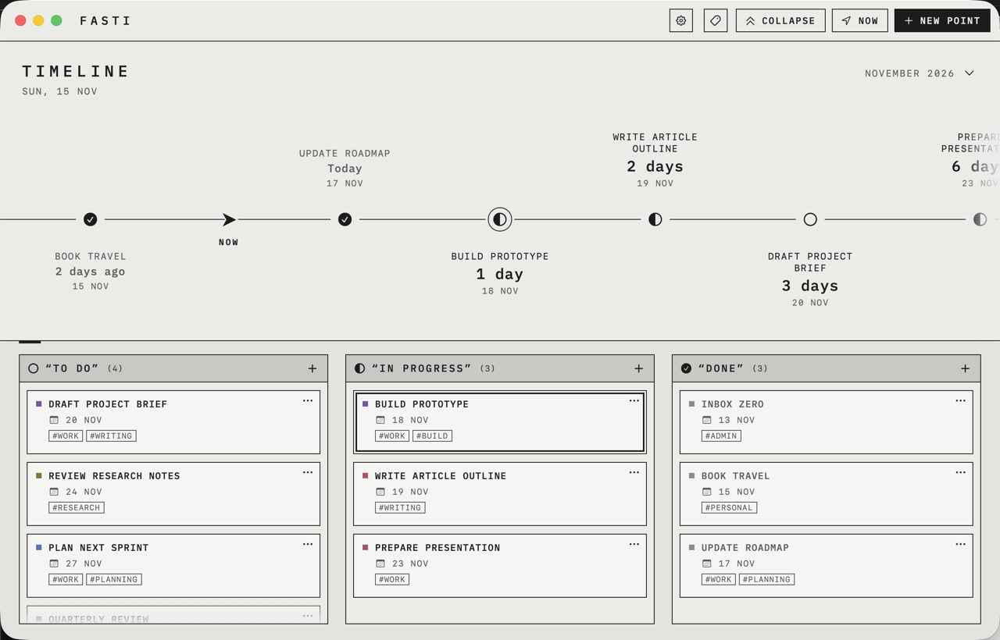
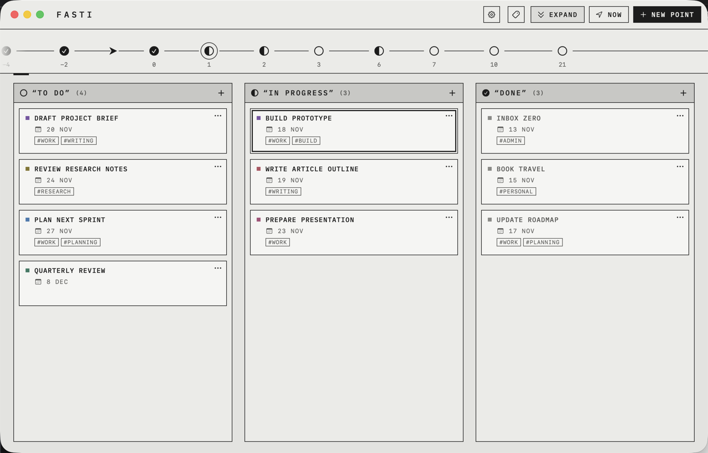
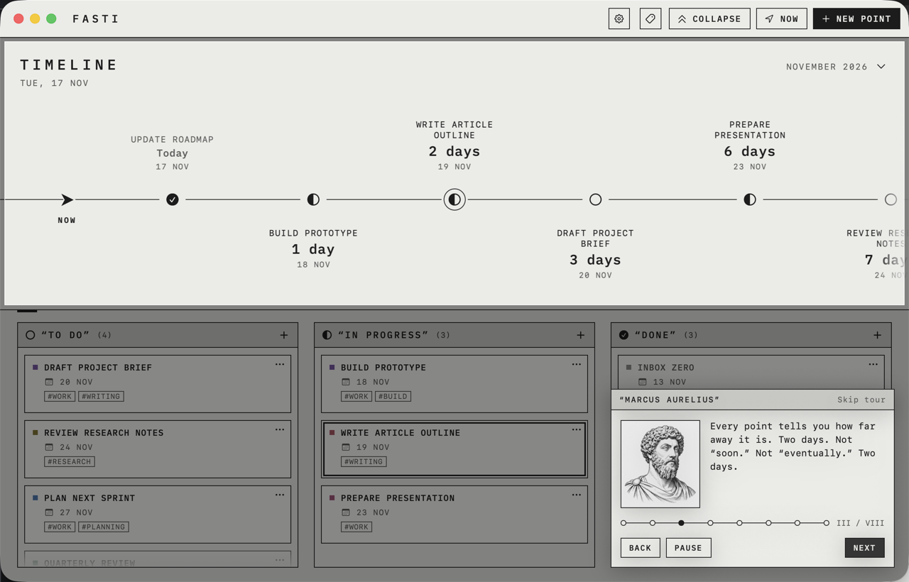

Timeline
Points sit along a line around an arrow marking now, each with how many days away it is.
A native Mac app · macOS 14 or later
Fasti puts a horizontal timeline above a three-column task board. Every task, called a point, appears in both: the timeline shows when it’s due, the board shows whether it’s to do, in progress or done.

One point, two views
Points sit along a line around an arrow marking now, each with how many days away it is.
Scroll past and future, jump to a month, or press Now to come back.
Fold the timeline into a thin strip when you need the board. Points show days away: 5, or −10.
To Do, In Progress and Done, sorted by due date. Drag a card forward when you start.
Pick a point on the timeline and its card lights up on the board, and the other way round.
Tag points and filter the board and timeline down to what matters today.
Arrows move between points and cards. Shift-arrows move a point to the next status.
Edits, moves and deletes all undo and redo as you’d expect on a Mac.
Follows your system appearance, respects Reduce Motion, and works with VoiceOver.
When it’s time to work, collapse the timeline to an 80-point strip and give the board the room. The dates are still there, as days from now.

On first launch, Marcus Aurelius walks you through Fasti in your own window, on sample points that never touch your workspace. Narrated, with captions. Replay it any time from Help.

Now. Do the next right thing. I’ll be here. Well. The statue will.

The full list is in Settings
| New point | CommandN |
|---|---|
| Edit the selected point | Return |
| Switch between timeline and board | ShiftTab |
| Move between points and cards | Left arrowRight arrowUp arrowDown arrow |
| Move a point back or forward a status | ShiftLeft arrow or ShiftRight arrow |
| Go to now | Command0 |
| Undo / redo | CommandZ , and for redo ShiftCommandZ |
Fasti for Mac runs on macOS 14 Sonoma or later. Everything is saved locally; there’s no account to make.
Not available to download yet. This page will link to the first release when it’s out.